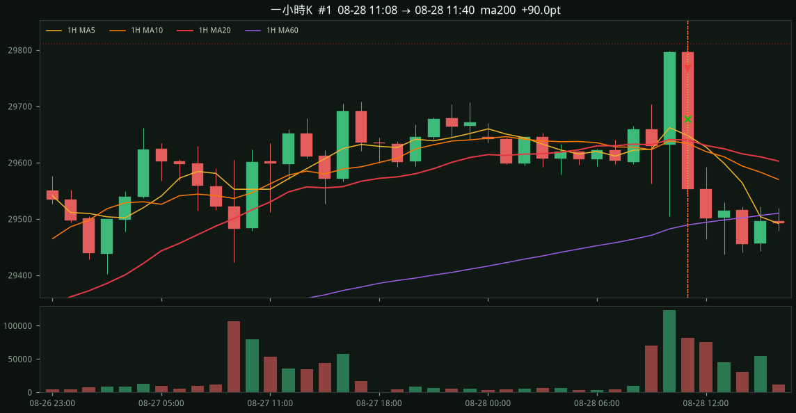
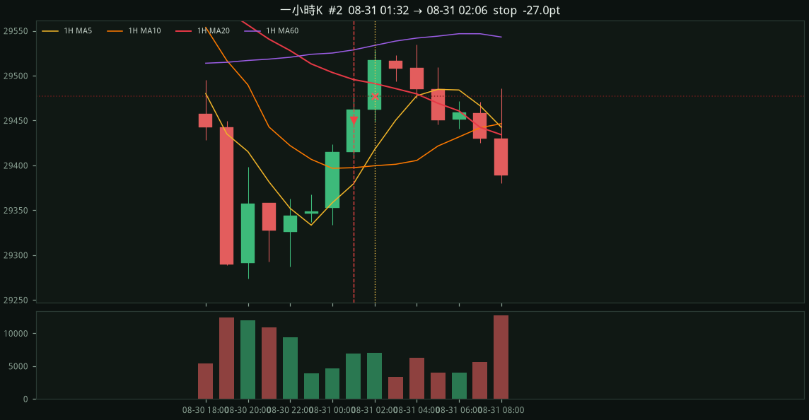
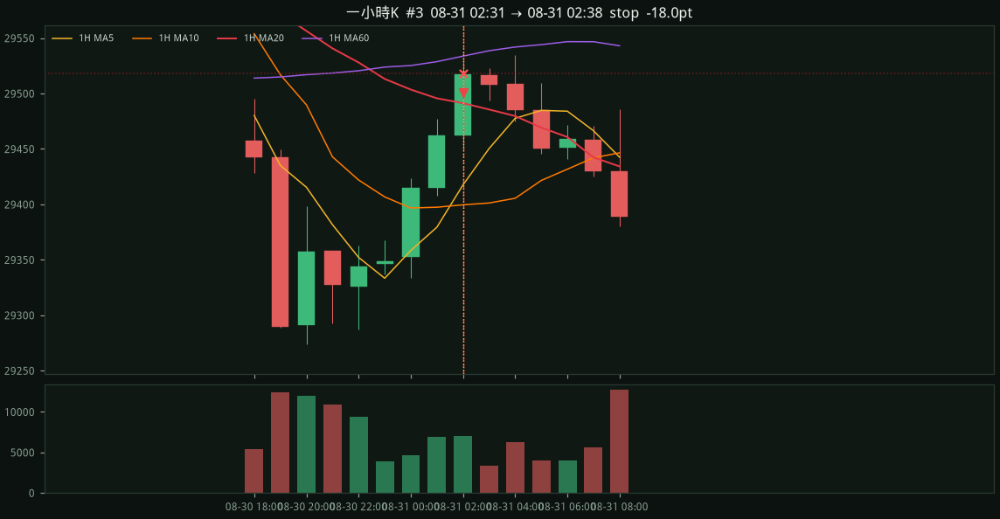
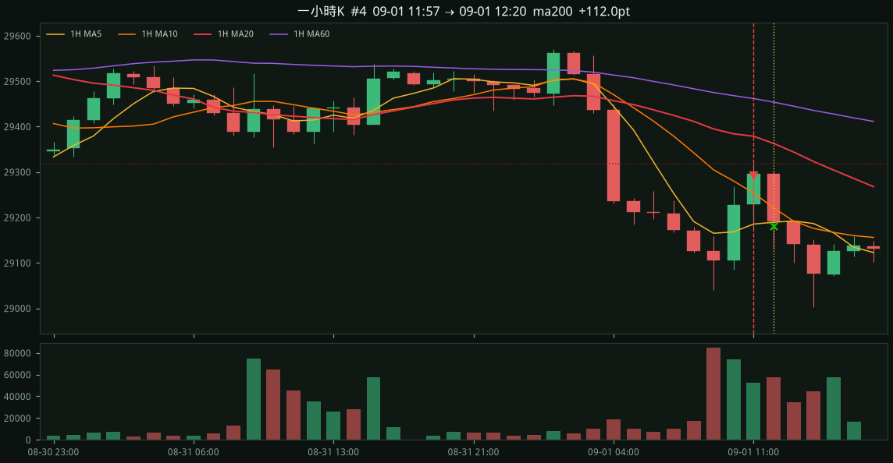
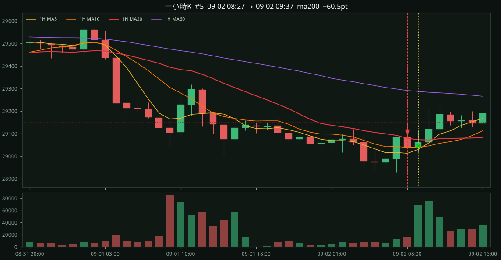
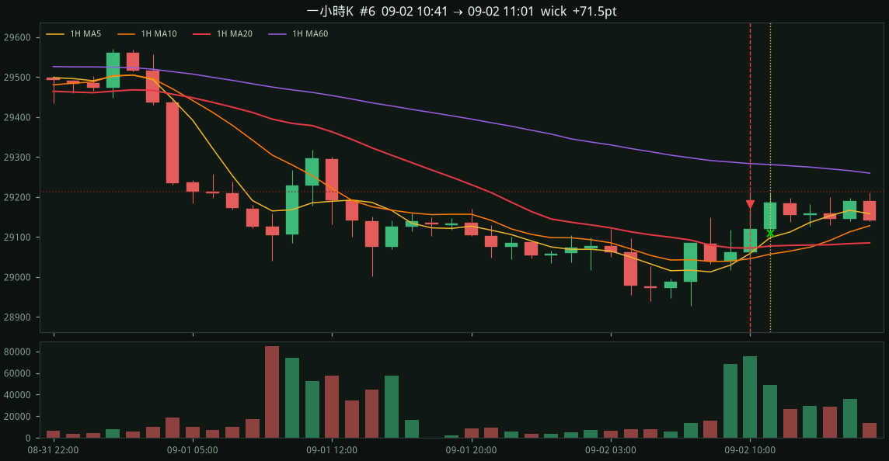
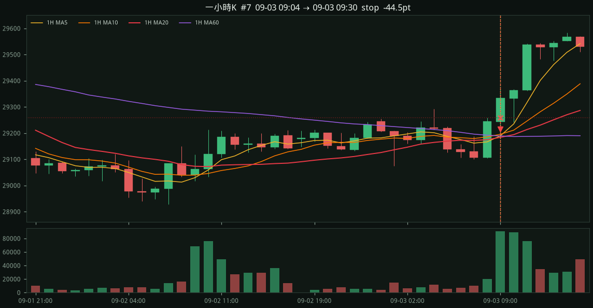
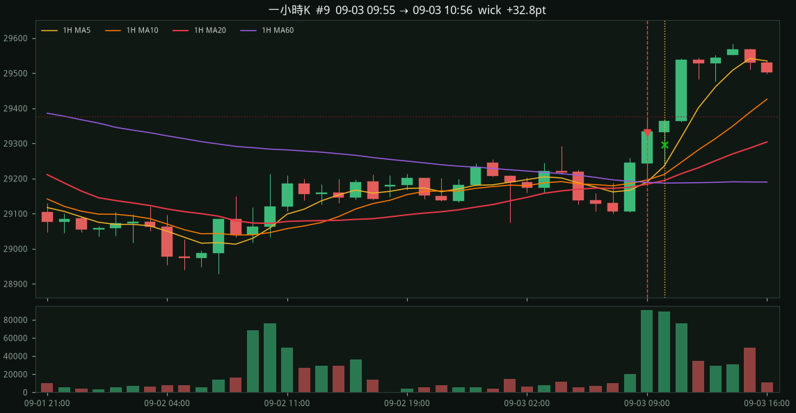
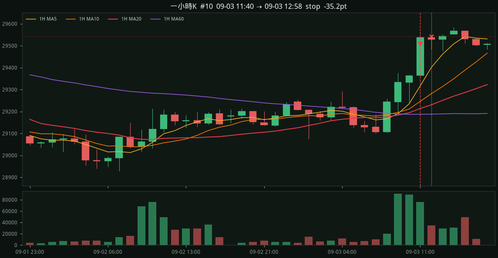

NQ=F 線性空
每筆交易兩張圖：上面一分K，下面一小時K（Yahoo 原生、整點對齊、不切半根）。一分圖灰線是已收盤小時收盤。
7d · 2026-08-28 00:09 → 2026-09-04 16:59 ET · bars=7859
多頭排列創四小時高 → 回測MA10不過高 → 破MA20做空。峰距MA200至少 100 點。停損四小時高；停利 MA200 / 靠近長下影。
筆數10
勝率50.0%
總點數+178.0
勝/負5/5
ma200 3筆 +262.5 · stop 5筆 -188.8 · wick 2筆 +104.2 · 1 口約 +3510 USD（含來回佣 5）
漏斗：創4H高 42 → 回測MA10 42 → 破MA20 25 → 進場 10（距不夠 15 · 破排列取消 0 · 再創高取消 17）
ma2001m1h峰距 162
entry 29768.00
stop 29811.50 （風險 43.5 pts）
exit 29678.00 ma200
4H高 29811.50 @ 08-28 11:01 MA200當時 29649.61
回測MA10 @ 08-28 11:02
進場 MA5 29788.1 / MA10 29792.2 / MA20 29782.5
MA60 29691.6 / MA200 29655.8
1H 29796.50 / 1H MA20 —
一小時K（整點對齊，完整小時棒）

stop1m1h峰距 118
entry 29450.25
stop 29477.25 （風險 27.0 pts）
exit 29477.25 stop
4H高 29477.25 @ 08-31 01:27 MA200當時 29359.12
回測MA10 @ 08-31 01:29
進場 MA5 29465.5 / MA10 29467.9 / MA20 29461.9
MA60 29417.0 / MA200 29362.0
1H 29414.75 / 1H MA20 29503.55
一小時K（整點對齊，完整小時棒）

stop1m1h峰距 120
entry 29500.50
stop 29518.50 （風險 18.0 pts）
exit 29518.50 stop
4H高 29518.50 @ 08-31 02:22 MA200當時 29398.38
回測MA10 @ 08-31 02:23
進場 MA5 29506.4 / MA10 29508.7 / MA20 29507.7
MA60 29471.0 / MA200 29405.3
1H 29462.25 / 1H MA20 29495.67
一小時K（整點對齊，完整小時棒）

ma2001m1h峰距 155
entry 29293.25
stop 29317.75 （風險 24.5 pts）
exit 29181.25 ma200
4H高 29317.75 @ 09-01 11:49 MA200當時 29162.82
回測MA10 @ 09-01 11:52
進場 MA5 29303.2 / MA10 29305.6 / MA20 29293.6
MA60 29238.3 / MA200 29169.2
1H 29228.00 / 1H MA20 29384.11
一小時K（整點對齊，完整小時棒）

ma2001m1h峰距 151
entry 29107.75
stop 29149.50 （風險 41.8 pts）
exit 29047.25 ma200
4H高 29149.50 @ 09-02 08:21 MA200當時 28998.38
回測MA10 @ 09-02 08:23
進場 MA5 29116.9 / MA10 29118.1 / MA20 29108.9
MA60 29069.7 / MA200 29001.6
1H 29084.50 / 1H MA20 29092.39
一小時K（整點對齊，完整小時棒）

wick1m1h峰距 135
entry 29182.50
stop 29213.00 （風險 30.5 pts）
exit 29111.00 wick
4H高 29213.00 @ 09-02 10:35 MA200當時 29078.06
回測MA10 @ 09-02 10:38
進場 MA5 29186.5 / MA10 29190.1 / MA20 29185.6
MA60 29119.5 / MA200 29083.5
1H 29062.25 / 1H MA20 29073.10
一小時K（整點對齊，完整小時棒）

stop1m1h峰距 111
entry 29214.25
stop 29258.75 （風險 44.5 pts）
exit 29258.75 stop
4H高 29258.75 @ 09-03 08:55 MA200當時 29147.50
回測MA10 @ 09-03 09:00
進場 MA5 29211.8 / MA10 29230.3 / MA20 29218.7
MA60 29176.8 / MA200 29149.8
1H 29244.50 / 1H MA20 29174.81
一小時K（整點對齊，完整小時棒）

stop1m1h峰距 123
entry 29221.00
stop 29285.00 （風險 64.0 pts）
exit 29285.00 stop
4H高 29285.00 @ 09-03 09:34 MA200當時 29162.01
回測MA10 @ 09-03 09:35
進場 MA5 29245.0 / MA10 29249.5 / MA20 29234.0
MA60 29221.5 / MA200 29163.1
1H 29244.50 / 1H MA20 29174.81
wick1m1h峰距 196
entry 29329.25
stop 29375.50 （風險 46.2 pts）
exit 29296.50 wick
4H高 29375.50 @ 09-03 09:52 MA200當時 29179.69
回測MA10 @ 09-03 09:52
進場 MA5 29346.0 / MA10 29347.8 / MA20 29329.7
MA60 29263.0 / MA200 29182.9
1H 29244.50 / 1H MA20 29174.81
一小時K（整點對齊，完整小時棒）

stop1m1h峰距 253
entry 29507.25
stop 29542.50 （風險 35.2 pts）
exit 29542.50 stop
4H高 29542.50 @ 09-03 11:31 MA200當時 29289.60
回測MA10 @ 09-03 11:33
進場 MA5 29516.5 / MA10 29524.0 / MA20 29513.3
MA60 29422.4 / MA200 29307.6
1H 29363.50 / 1H MA20 29193.95
一小時K（整點對齊，完整小時棒）
